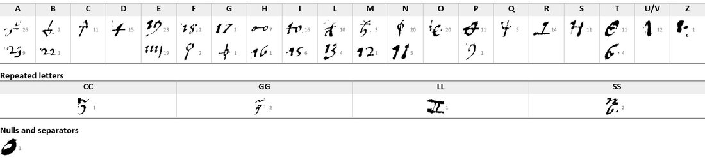

At a glanceKey recovered from the adjacent plaintext · 553 cipher symbols
- The letter
- An unsigned letter to “V. S. Ill.ma” (a lord or ambassador), c. 1527–1529 from its content; ten lines of cipher with ten clear stretches.
- Where
- Archivio di Stato di Siena, Concistoro 2308, fasc. 2: the cipher is no. 13 (DECODE R4801), its clear copy no. 16 (DECODE R4804); both catalogued “1500–1599” with no status.
- The cipher
- Homophonic substitution, 37 signs, many shaped like numerals: one or two signs per letter, four signs for the doubled letters ll, gg, ss, cc, one null, no code words.
- How it was deciphered
- George Lasry transcribed the cipher and built an initial key in CTTS; Claude Fable 5.1 finalised the key and the transcription from the plaintext of no. 16 (17–18 October 2026).
- What it says
- The Pope’s agreements and his delay in coming to Bologna have left “qualche ruggine”; the writer would claim some castle, as Lautrec took Modena and Reggio, “perché al peggio non si ha sinon a rendere”.
- Still open
- The first word (baca?) and “sabbatte”; writer, addressee and exact date.
- Credit
- George Lasry, with CTTS and Claude Fable 5.1: transcription, key and reading, sent by email to Daniel Bourdeau on 17–18 October 2026. This page reports his result.
The project’s survey of the bundle (24 September 2026) had noticed that no. 16 is the clear text of no. 13 but did not rebuild the key; the other pieces of the bundle are described on its own page.
01The letter and its key
553 cipher symbols on ten lines, with clear stretches such as “saranno assai necessarie loro investigationi” and “et tutto si lassa i[n] la discretiss[im]a co[n]sideratione”. Most signs look like numerals (“23” is a, “19” and “111” are e, “11” is n), others like small letters and loops; a superscript circle or stroke belongs to several of them.

02The decipherment
George Lasry’s reading, unchanged (cipher and clear text together; abbreviations expanded in brackets; the plaintext twin no. 16 settles the readings):
baca per che il papa in questi accordi con p[er] accordato et la tardanza de la ven[u]ta sua a Bologna pare che resti in qualche ruggine che saranno assai necessarie loro inuestigationi et adiuisi max[ime] ch[e] la maggior parte deli principali dela corte no[n] pare ch[e] ne parlino di lui sinon male non dando fede ala parente la fada bada et p[er]o haueremo giudicato al proposito i[n] questo dubbio et occasione spendare il tutto per abbassamento deli uicini et pretendendo in qual che castello far il fatto n[ost]ro come fe no[n] sabbatte quando passo Lutreche che a suo spete si piflio Modana et Reggio et quest per che al peggio non si ha sinon a rendere et tutto si lassa i[n] la discretiss[im]a co[n]sideratione di. V. S. Ill[ustrissi]ma
His translation: “baca(?) because the Pope, in these agreements, with per accordato and the delay of his coming to Bologna, it seems that some rust remains, so that their investigations and advice will be very necessary, especially as the greater part of the principal men of the court do not seem to speak of him except ill … and therefore we shall have judged it fitting, in this doubt and occasion, to spend everything for the abasement of the neighbours and, claiming some castle or other, to do our business as he did non sabbatte(?) when Lautrec passed, who at his own expense took Modena and Reggio; and this because at the worst there is nothing to do but give back; and all is left to the most discreet consideration of Your Most Illustrious Lordship.”
The papal journey to Bologna after agreements and Lautrec’s seizure of Modena and Reggio (1527) point to the years between the sack of Rome and Clement VII’s coming to Bologna in the autumn of 1529, 1527–1529. George Lasry marked the date as unverified in his report and confirmed 1527–1529 on 18 October 2026.
03What remains
- The first word (baca?) and the word “sabbatte”.
- Writer, addressee and exact date; the fascicle gives none.
04Sources
- Archivio di Stato di Siena, Concistoro 2308 fasc. 2 no. 13: DECODE R4801; the clear copy, no. 16: DECODE R4804.
- George Lasry, “The cipher documents of Concistoro 2308, fasc. 2”, report of 17 October 2026, pp. 35–36.
Manuscript rights: Archivio di Stato di Siena.
Report text, key figure and profile: targets/siena13/.